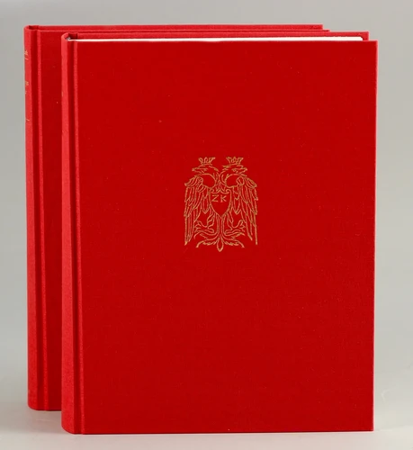

The Kallierges Pindar: A Study in Renaissance Greek Scholarship and Printing

Brief excerpts from reviews / statements in international press
F.’s magnificent volumes address two different publics: Pindar specialists, who will find here a careful investigation of a crucial moment in Pindar’s textual history, the 1515 editio Romana; and book historians, who will discover a remarkable case study in Renaissance book production.
Luigi-Alberto Sanchi, The Classical Review 67 (2017), 12-14.
This is a fascinating book, beautifully illustrated, with 160 plates of pages of the different settings, copious indexes, and appendixes documenting the author’s meticulous scholarship, as well as his love for his subject, and it is impossible, in the limited space of this review, to do justice to the wealth of information and the numerous original points of detail it offers. Scholars working on Pindar and on the Greek Renaissance will be grateful to Fogelmark for this enormous effort of many decades.
Giambattista D’Alessio Bryn Mawr Classical Review, 2017.07.27.
Le « magnum opus » de Staffan Fogelmark est un ouvrage hors du commun tant par le support que par le contenu. La maison d’édition Jürgen Dinter a en effet produit deux magnifiques volumes, luxueusement reliés, dont la mise en page est un plaisir non seulement pour la lecture mais aussi pour le regard : relevons en particulier l’abondance de tableaux synthétiques, de listes récapitulatives, d’index et surtout les 160 illustrations de grande qualité reproduisant les pages des éditions sur lesquelles porte principalement l’analyse de l’auteur. Quant au contenu, il attire immédiatement l’attention par l’originalité de son organisation : l’exposé ne se déroule pas en fonction des résultats de la recherche, mais entraîne le lecteur dans une forme de récit rapportant les étapes d’une longue enquête menée à propos du texte et des scholies de Pindare, publiés par Zacharie Calliergi à Rome en 1515
Monique MUND-DOPCHIE L’Antiquité Classique 87 (2018), 711-14.
Instead of immediately providing the reader with answers and explanations of all problems and quibbles, F. prefers to have the reader ‘make the journey in [his] company’ (p. XV); this approach makes the reading very engaging and gives it somewhat of the suspense of an elegantly written scientific novel.
Luigi-Alberto Sanchi The Classical Review 67 (2017), 12-14.
In his long career Staffan Fogelmark has published scholarly works focusing on both Pindar and on Renaissance book printing. With these two lavishly produced and painstakingly researched volumes he has now combined both interests in a thorough study of one of the most influential modern editions of Pindar’s Victory Odes (according to Fogelmark ‘the most important Pindar edition ever’ [xiii])
Giambattista D’Alessio Bryn Mawr Classical Review, 2017.07.27.
Fogelmark […] has certainly succeeded in delivering a monumental study on Kallierges’ 1515 Pindar and, most importantly, in touching upon a number of challenging scholarly issues that we can hope will prompt scholars, and philologists in particular, to assess early printed books under a new light.
Geri Della Rocca de Candal The Library, December 2017, 499-501.
A work of painstaking research that offers a wealth of data and tantalizing questions for further study, Staffan Fogelmark’s study of Zacharias Kallierges’s 1515 edition of the Odes of Pindar emerges as a cornerstone of philological research on the early editions of the Greek classics printed in the sixteenth century.
Francesco G. Giannachi Renaissance Quarterly, LXX, No. 4, 1473-75.
Few books have been subjected to such detailed analysis as Fogelmark has bestowed on the famous 1515 editio Romana of Pindar; only the 42-line Bible and Hinman’s First Folio offer parallels.
Nicolas Barker The Book Collector, Winter 2018, 778-79.
Apart from exploring the historical and cultural background of the enterprise, Fogelmark provides an extremely detailed description and analysis of the edition, having examined, directly or indirectly over more than 40 years, 227 of the more than 230 printed copies he identified. In doing so, he discovered that important portions of the edition were reset, with various consequences for its content. (cont.)
C’est à l’analyse minutieuse de ces différences que Staffan Fogelmark s’attache en s’appuyant sur une connaissance approfondie de la philologie dans ses rapports avec la critique textuelle et sur les acquis de la science nouvelle venue qu’est la bibliographie matérielle. (cont.)
Fascinating as this is, it pales by comparison with Fogelmark’s other discovery, made on 20 June 1991, ‘a warm and sunny day’, when he went to look at the 1515 Pindar at Jesus College, Cambridge. (cont.)
The second and equally exciting find of this copy inspection was the discovery of a single copy (held at Jesus College, Cambridge) which instead of the standard dedication to Cornelio Benigno of Viterbo, bore a dedication to the humanist Marcus Musurus. Fogelmark publishes this previously unknown dedication together with a translation [338-50].
Giambattista D’Alessio Bryn Mawr Classical Review, 2017.07.27.
Monique MUND-DOPCHIE L’Antiquité Classique 87 (2018), 711-14.
Nicolas Barker The Book Collector, Winter 2018, 778-79.
Natasha Constantinidou Quaerendo 48 (2018), 1-3.
En outre, l’immense travail de quarante ans consacré à l’édition de Calliergi par Staffan Fogelmark fournit aux philologues et aux historiens du livre une documentation abondante, des relevés minutieux de variantes textuelles, de caractéristiques matérielles du travail éditorial et des statistiques qui font sens. Espérons que malgré son prix élevé, il sera abondamment diffusé, car il associe à la richesse du contenu la beauté formelle des chefs-d’œuvre de l’imprimerie qui depuis le XVe siècle sont conservés et admirés dans de nombreuses bibliothèques.
Monique MUND-DOPCHIE L’Antiquité Classique 87 (2018), 711-14.
Ce fruit du labeur de toute une vie requiert assurément des vertus peu communes : patience, minutie, endurance, empathie pour une figure de la tradition philologique, pour un livre et une époque aussi.
Pascale Hummel Revue des études grecques 129 (2016), 587-594.
Queste e altre domande accompagnano la lettura della monografia di Staffan Fogelmark e la raccomandano non solo ai lettori del nostro tempo, ma anche a età ulteriori più sensibili allo studio delle scienze dell’antichità.
Francesco Tissoni ATHENAEUM 107, I (2019), 279-283.
One cannot imagine a much more thorough analysis of a fascinating survivor from Renaissance Greek printing.
Douglas F. Bauer, Papers of the Bibliographical Society of America, 113 (2019), 83-87.
[On the typographic excellence of the book:]
The great mass of information, textual, physical and historical, is set out in generous, almost sumptuous typographic form […]. It is as grand a piece of Greek typography as Proctor’s Odyssey (Oxford, 1909).
Nicolas Barker The Book Collector, Winter 2018, 778-79.
Correspondence
Where to buy
The book can still be had in bookshops or from the publisher: Antiquariat Jürgen Dinter, dinter@dinter.de, Buchholzstraße 8, D-51061 Köln/Cologne, Germany.